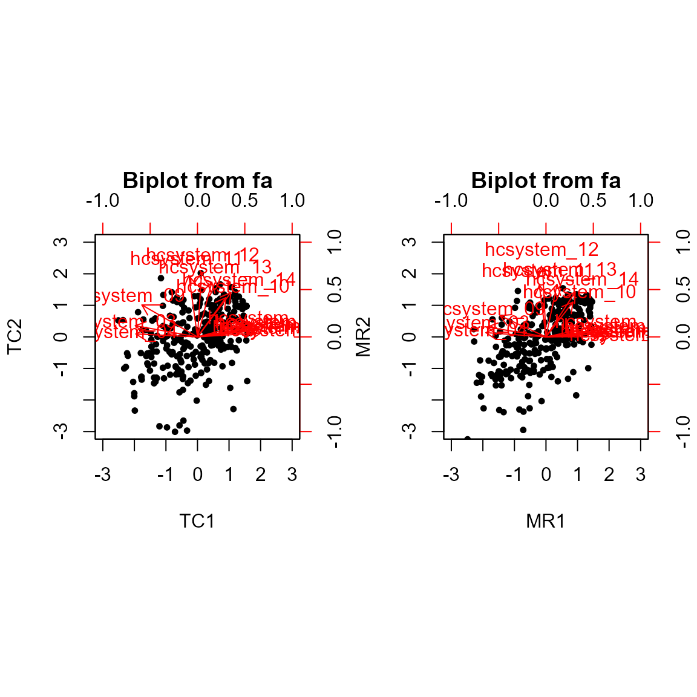
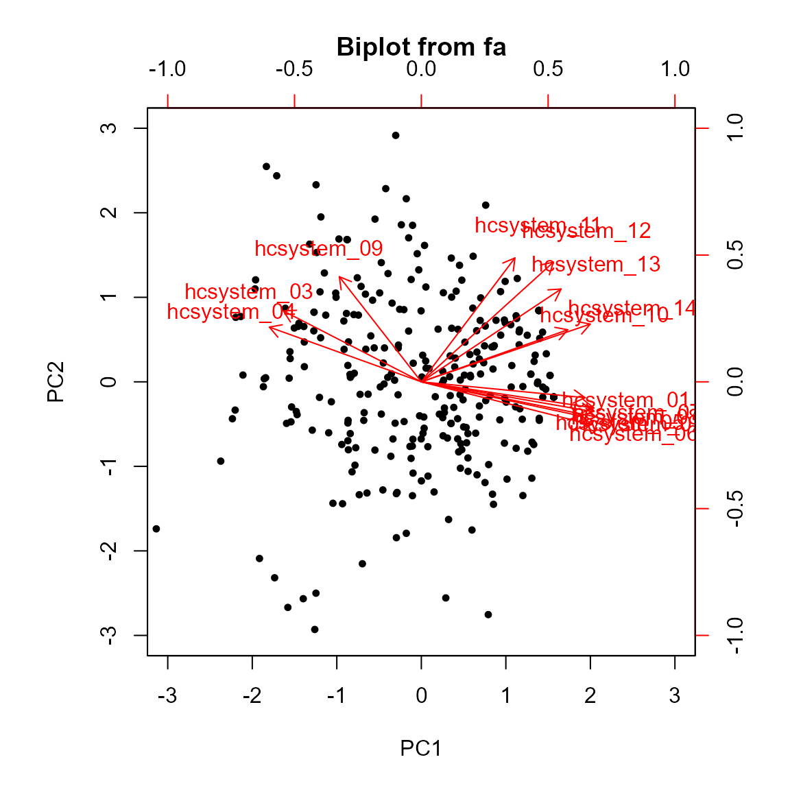

Extending ordr: Comparison of PCA/FA
new-ord-classes-comparison.RmdIntroduction
This vignette proceeds Extending ordr: PCA and Extending ordr: FA, using
the ordr.extra incorporations of
psych::principal() and psych::fa() to
illustrate some of the similarities and differences between methods at
both the theoretical and practical level.
Comparison of PCA and FA
library(ordr.extra) # load {ordr.extra} to access `hcw` data belowWarning: package 'ggplot2' was built under R version 4.3.3Having demonstrated PCA and FA independently of each other, we now apply both to one data set for comparison. The data comes from a 2022 study on burnout in healthcare workers (HCW) during the Covid-19 pandemic (Guastello et al., 2022). In particular, we use data from a fourteen-item Likert scale questionnaire, the Healthcare System Communication Questionnaire, surveying HCW perceptions of hospital administration. The original study applied PCA followed by an oblimin rotation (a type of oblique rotation) to the data to examine whether it had psychometric properties. It was seen that with two principal components, the questions generally loaded strongly onto just one of the two components. Those that loaded strongly onto the first principal component generally pertained to consideration from leadership, and those that loaded strongly onto the second generally pertained to structure in the hospital. The principal components were named accordingly.
We begin by recreating this PCA.
Attaching package: 'psych'The following objects are masked from 'package:ggplot2':
%+%, alphaLoading required namespace: GPArotation
sum(hcw_pca$values[1:2]) / sum(hcw_pca$values[1:14]) # agrees with % variance captured from the paper[1] 0.6675059
hcw_pca$loadings
Loadings:
TC1 TC2
hcsystem_01 0.708 0.187
hcsystem_02 0.825 0.103
hcsystem_03 -0.821 0.148
hcsystem_04 -0.813
hcsystem_05 0.760
hcsystem_06 0.838
hcsystem_07 0.783 0.147
hcsystem_08 0.793 0.126
hcsystem_09 -0.734 0.421
hcsystem_10 0.375 0.518
hcsystem_11 -0.114 0.811
hcsystem_12 0.852
hcsystem_13 0.189 0.723
hcsystem_14 0.442 0.585
TC1 TC2
SS loadings 5.966 2.810
Proportion Var 0.426 0.201
Cumulative Var 0.426 0.627These loadings approximately equal those in Guastello et al., 2022.
Next, we perform FA on the same centered and scaled data, again followed by an oblimin rotation. We also produce biplots for both analyses.
# conduct FA
hcw_fa <- scaled_hcw |>
ordinate(~ fa(., nfactors = 2L, rotate = "oblimin"))
op <- par(mfrow = c(1, 2)) # place biplots side by side
biplot.psych(hcw_pca)
biplot.psych(hcw_fa)
par(op)The biplots are noticeably similar in both the geometry of the variable vectors and the distribution of observations. Comparing the loadings and scores from both GDA techniques, we can see that most results do align quite closely between techniques (we divide the matrices entry-wise so that values closer to 1 below indicate near-identical entries).
unclass(hcw_fa$loadings / hcw_pca$loadings) # values close to 1 indicate near equality MR1 MR2
hcsystem_01 0.9838720 0.78102915
hcsystem_02 1.0243417 0.44683688
hcsystem_03 0.9431707 0.88462021
hcsystem_04 0.9748422 1.44717527
hcsystem_05 0.9891095 0.52403688
hcsystem_06 1.0156606 0.08313846
hcsystem_07 1.0084168 0.67198350
hcsystem_08 1.0111838 0.60436741
hcsystem_09 0.8263076 0.66466805
hcsystem_10 0.9467145 0.88460038
hcsystem_11 0.7694566 0.84057085
hcsystem_12 -0.8222863 1.06035898
hcsystem_13 0.7686243 0.96001009
hcsystem_14 0.8744856 1.01422655
head(hcw_fa$scores / hcw_pca$scores) # values close to 1 indicate near equality MR1 MR2
[1,] 0.7050140 0.7626172
[2,] 1.0456966 0.8806257
[3,] 1.2073991 3.1631164
[4,] 0.7135168 0.8909829
[5,] 0.9205250 1.4320409
[6,] 1.1677185 0.8804905This would suggest that most of the variance in the data is common and not unique to one variable. In both biplots, the variable vectors are mostly either close to horizontal or close to vertical, indicating strong correlations with those nearby variable vectors and that most questions (i.e. variables) load strongly onto exactly one component. In the loadings matrix below, we see the latter is generally true.
unclass(hcw_pca$loadings) TC1 TC2
hcsystem_01 0.70835356 0.18672565
hcsystem_02 0.82520336 0.10291172
hcsystem_03 -0.82115126 0.14765587
hcsystem_04 -0.81327679 0.03879340
hcsystem_05 0.75951523 0.08223227
hcsystem_06 0.83833332 0.05375802
hcsystem_07 0.78297867 0.14654429
hcsystem_08 0.79305986 0.12566448
hcsystem_09 -0.73377508 0.42136560
hcsystem_10 0.37469099 0.51801892
hcsystem_11 -0.11392993 0.81098403
hcsystem_12 0.05428545 0.85202088
hcsystem_13 0.18938449 0.72251551
hcsystem_14 0.44151680 0.58510865However, the previous biplots are not identical. There is an apparent elliptical shape to the data in our FA biplot (recall that the goal of FA is to unveil a “simple structure”). The PCA biplot appears to have slightly more spread due to PCA’s focus on capturing total variance, not strictly shared variance as FA does. To see this effect at a slightly greater degree, we can consider the corresponding PCA with no rotation.
# unrotated PCA
hcw_unrotated_pca <- scaled_hcw |>
ordinate(~ principal(., nfactors = 2L, rotate = "none"))
biplot.psych(hcw_unrotated_pca)
Not only are the observations spread slightly more, but the data appears more evenly distributed compared to the previous biplots.
Additionally, most variable vectors in the unrotated PCA biplot no longer load as clearly onto a single component. This makes it more challenging to determine the latent variables that explain the variance in our original variables. In this case, the study from which our data was obtained termed the two principal components consideration and structure, respectively. That PCA as well as the FA we performed both allow us to easily make statements such as, “Question 4 on the questionnaire strongly assesses consideration, whilst question 12 strongly assesses structure.” In a PCA without rotation, such interpretations are not as clear.
Ultimately, we see that FA is useful for obtaining a simply structure with interpretable latent variables. If we want a similar result that captures more variance and thus retains more information from the original data, we may opt for PCA followed by rotation. And if we want to capture more variance still, perhaps at the expense of interpretability, then unrotated PCA delivers that.